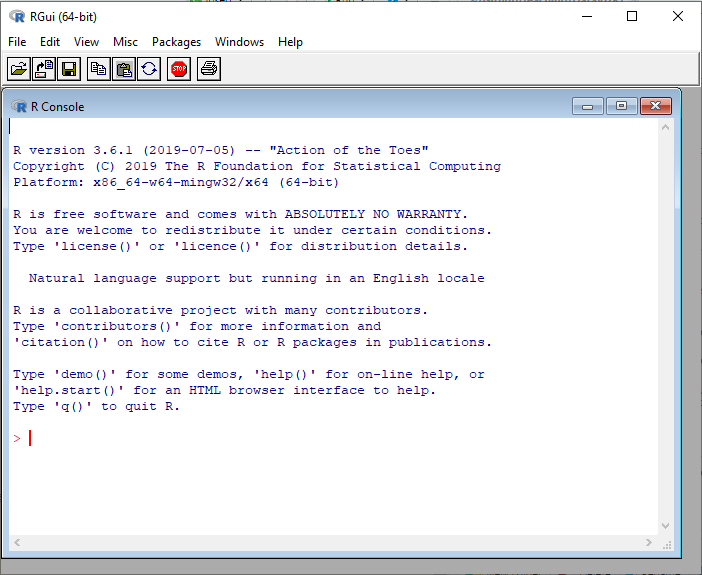

R intro!
This portion of the workshop was organized by Mladen Cucak
Here we will go through some R basics, with an emphasis on skills that you will use later on in the workshop. Of course, we do not have time to cover everything here, so we encourage you to check out our “resources” section for more introductory R material.
Additionally, everything in R can be done in a number of ways - we are showing only one way here.
Why R?
We recognize that there are many options when it comes to statistical and vizualization software. Here are a few reasons that we have chosen R for most applications.
Performance: stable, light and fast-parallelisation
Support network: documentation, community, developers
Reproducibility: anyone anywhere can reproduce results
Versatility: solutions for almost any numerical problem and extensive graphical capabilities graphical capabilities
Accessibility: free and open source
R vs. RStudio
R can be downloaded here: http://www.r-project.org/
R console is basic…

RStudio (IDE) 
- Integrated Development Environment (IDE) for R,
- Separate program, developed by a company but also free and open source, and
- By far the best thing to use when learning R.
RStudio orientation
Four panes (positions can be changed)
- Scripts (top-left)
- R console (bottom-left)
- Environment/history (top-right)
- Files/plots/help/etc (bottom-right)

RStudio Projects
- Projects in RStudio create a folder for storing all of our files (data, scripts, images)
- Eliminates the need for setting our working directory with
setwd()
- It is useful to created individual folders within the project for storing data, scripts, images, etc.
- When you want to open your project to a new computer, just copy this entire folder onto the new machine
Getting help
We all run into isssues and error codes when working in R. Google is your friend! Here are some helpful resources for when you get stuck:
Help:
- Google: just add “with R” at the end of any search
- Stack Overflow: programming questions
- Cross Validated: scientific questions
Additional references (more in the ‘references’ tab of our workshop website): - “R for Data Science” → https://r4ds.had.co.nz
- R4DS Learning Community → https://rfordatasci.com
Basic R Concepts
- In R, We have objects, where the data is stored.
Functions which are applied on objects or another functions (i.e. to analyze the data) - We create scripts which are something like kitchen recipes.
- This collection of recipes is stored in an R project.
Objects
We can assign values to objects using the assignment operator, and use R to do useful things: You may come across code that assigns values using = instead of <-, which can have some slight differences It is good practice to stick with <- for assigning values.
## [1] 4## [1] 3But be careful…
pro tip: Stick to small letters and underscores + avoid numbers when naming objects.
Functions
Functions are “canned scripts” which automate series of commands on one or more inputs called arguments. Arguments can be anything (numbers, file names, variables), options are arguments that take on default values which can be altered by the user
addition <- function(argument_one, argument_two){
argument_one + argument_two
}
addition(argument_one = x,
argument_two = y)## [1] 3## [1] 3## [1] TRUE## [1] TRUEExamples of functions and options.
## [1] 3## [1] 3.14Some useful functions:
## [1] 1## [1] "numeric"## num 1Workspace environment
- History tab will show your recent code
- To list and remove these objects from your global environment:
Object types
Vectors
We can save multiple values into a single variable, called a vector, using the c() function:
## [1] 50 60 65Vectors can also contain other types of data:
char <- c("mouse", "rat", "dog")
fct <- factor("low", "med", "high")
dates <- as.Date(c("02/27/92", "02/27/92", "01/14/92"), "%m/%d/%y")
logical <- c(FALSE, FALSE, TRUE) # only TRUE or FALSENote the quotation marks!
Data frames
A data frame is the most common way of storing data in R and, generally, is the data structure most often used for data analyses. Under the hood, a data frame is a list of equal-length vectors. Each element of the list can be thought of as a column and the length of each element of the list is the number of rows.
We can make our own data frames:
## col_one col_two col_three
## 1 50 mouse 1992-02-27
## 2 60 rat 1992-02-27
## 3 65 dog 1992-01-14## col_one col_two col_three
## 1 50 mouse 1992-02-27Notice different data types in table header. Datatypes in R: int stands for integers.
dbl stands for doubles, or real numbers.
chr stands for character vectors, or strings.
dttm stands for date-times (a date + a time).
lgl stands for logical, vectors that contain only TRUE or FALSE.
fctr stands for factors, which R uses to represent categorical variables with fixed possible values.
We can subset on multiple conditions using & for AND conditions (ie. both are TRUE), and | for OR conditions (ie. either are TRUE):
## [1] "mouse" "rat"## numeric(0)Indexing and subsetting dataframes
Dataframes are also subsetted or indexed with square brackets. We must specify rows then columns[row,column]:
df[1, 1] # first element in the first column of the data frame (as a vector)
df[1, 3] # first element in the third column (as a vector)
df[, 1] # first column in the data frame (as a vector)
df[1] # first column in the data frame (as a data.frame)
df[1:2, 3] # first two elements in the third column (as a vector)
df[3, ] # the 3rd element for all columns (as a data.frame)Use the - sign to exclude certain sections:
## col_two col_three
## 1 mouse 1992-02-27
## 2 rat 1992-02-27
## 3 dog 1992-01-14## col_one col_two col_three
## 1 50 mouse 1992-02-27Columns can be selected by name using the these operators:
## col_one
## 1 50
## 2 60
## 3 65## [1] 50 60 65## [1] 50 60 65## [1] 50 60 65tidyverse
tidyverse is a “package of packages” which includes several packages:

…designed to make the data analysis easier.

Hence loading tidyverse
Replaces loading all these packages:
library(ggplot2)
library(tibble)
library(tidyr)
library(readr)
library(purrr)
library(dplyr)
library(stringr)
library(forcats) Data import
Number of functions within readr and readxl for different types of files.
For this workshop, we will use coffee leaf rust data from Ethiopia provided by Emerson M. Del Ponte and Kifle Belachew.
## # A tibble: 6 x 13
## farm region zone district lon lat altitude cultivar shade
## <dbl> <chr> <chr> <chr> <dbl> <dbl> <dbl> <chr> <chr>
## 1 1 SNNPR Benc… Debub B… 35.4 6.90 1100 Local Sun
## 2 2 SNNPR Benc… Debub B… 35.4 6.90 1342 Mixture Mid …
## 3 3 SNNPR Benc… Debub B… 35.4 6.90 1434 Mixture Mid …
## 4 4 SNNPR Benc… Debub B… 35.4 6.90 1100 Local Sun
## 5 5 SNNPR Benc… Debub B… 35.4 6.90 1400 Local Sun
## 6 6 SNNPR Benc… Debub B… 35.4 6.90 1342 Mixture Mid …
## # … with 4 more variables: cropping_system <chr>, farm_management <chr>,
## # inc <dbl>, sev2 <dbl>Data transformation
All that bracket-based selecting can be a bit cumbersome. Add-on package dplyr greatly simplifies the process; inspired by SQL.
Key functions
There is six key dplyr functions that allow you to solve the vast majority of your data transformation challenges:
| Function | Description |
|---|---|
filter |
pick observations based on values |
select |
pick variables |
summarize |
compute statistical summaries |
group_by |
perform operations at different levels of your data |
arrange |
reorder data |
mutate |
create new variables |
Pipes
From magrittr package.
Traditional approach:
function(**data**, argument_one, argument_two,...)
pipe(%>%) approach: data %>% function( ., argument_one, argument_two,...)
Common operators
| Operator | Description |
|---|---|
+,-,*,/,^ |
arithmetic |
x / sum(x) |
arithmetic w/aggregation |
%/%, %% |
modular arithmetic |
log, exp, sqrt |
transformations |
lag, lead |
offsets |
cumsum, cumprod, cum... |
cum/rolling aggregates |
>, >=, <, <=, !=, == |
logical comparisons |
min_rank, dense_rank |
ranking |
between |
are values between a and b? |
ntile |
bin values into n buckets |
Put this to practice
tidyverse makes code readibility much easier, and you an write long sequences in a much freindlier manner thatn what we have seen above. We will take a smaller subset of our data to make explanation these concepts easier. As, this is slightly more complicated example, so move on and come back to this later to see if you can understand what was done.
dt_small <-
dt %>%
select(cultivar, zone, inc) %>%
group_by(cultivar, zone) %>%
slice(head(row_number(), 1)) %>%
filter(zone =="Sheka" |zone == "Sidama") %>%
ungroup()
dt_small## # A tibble: 6 x 3
## cultivar zone inc
## <chr> <chr> <dbl>
## 1 Improved Sheka 33.2
## 2 Improved Sidama 16.5
## 3 Local Sheka 81.8
## 4 Local Sidama 35.2
## 5 Mixture Sheka 29.5
## 6 Mixture Sidama 18.6Try some of these functions.
select() is used to grab columns.
## # A tibble: 6 x 2
## cultivar zone
## <chr> <chr>
## 1 Improved Sheka
## 2 Improved Sidama
## 3 Local Sheka
## 4 Local Sidama
## 5 Mixture Sheka
## 6 Mixture Sidamafilter() is used to to grab rows.
## # A tibble: 2 x 3
## cultivar zone inc
## <chr> <chr> <dbl>
## 1 Local Sheka 81.8
## 2 Local Sidama 35.2mutate() to make a new column.
## # A tibble: 6 x 4
## cultivar zone inc double_inc
## <chr> <chr> <dbl> <dbl>
## 1 Improved Sheka 33.2 66.4
## 2 Improved Sidama 16.5 33
## 3 Local Sheka 81.8 164.
## 4 Local Sidama 35.2 70.4
## 5 Mixture Sheka 29.5 59.1
## 6 Mixture Sidama 18.6 37.2Count number of observations by variable cultivar:
## # A tibble: 2 x 2
## zone n
## * <chr> <int>
## 1 Sheka 3
## 2 Sidama 3Calculate average inc by cultivar and remove missing values if there are any:
## # A tibble: 3 x 2
## cultivar mean_inc
## * <chr> <dbl>
## 1 Improved 24.8
## 2 Local 58.5
## 3 Mixture 24.1Also note that you can include multiple summaries and arrange order of rows based on some variable.
dt_small %>%
group_by(cultivar) %>%
summarize(mean_inc = mean(inc),
min_weight = min(inc)) %>%
arrange(desc(mean_inc))## # A tibble: 3 x 3
## cultivar mean_inc min_weight
## <chr> <dbl> <dbl>
## 1 Local 58.5 35.2
## 2 Improved 24.8 16.5
## 3 Mixture 24.1 18.6Reshaping the data with tidyr
It is often necessary to change the structure of data for different types of analysis, and especially for visualization.
Let us start with pivot_wider(), which makes dataframes wider by increasing the number of columns and decreasing the number of rows.
Generates multiple columns from two columns:
1. each unique value in the key column - zone becomes a column name
2. each value in the value column inc becomes a cell in the new columns
## # A tibble: 3 x 3
## cultivar Sheka Sidama
## <chr> <dbl> <dbl>
## 1 Improved 33.2 16.5
## 2 Local 81.8 35.2
## 3 Mixture 29.5 18.6pivot_longer() makes dataframes longer by increasing the number of rows and decreasing the number of columns.
## # A tibble: 6 x 3
## cultivar zone inc
## <chr> <chr> <dbl>
## 1 Improved Sheka 33.2
## 2 Improved Sidama 16.5
## 3 Local Sheka 81.8
## 4 Local Sidama 35.2
## 5 Mixture Sheka 29.5
## 6 Mixture Sidama 18.6## R version 4.0.3 (2020-10-10)
## Platform: x86_64-apple-darwin17.0 (64-bit)
## Running under: macOS Catalina 10.15.2
##
## Matrix products: default
## BLAS: /Library/Frameworks/R.framework/Versions/4.0/Resources/lib/libRblas.dylib
## LAPACK: /Library/Frameworks/R.framework/Versions/4.0/Resources/lib/libRlapack.dylib
##
## locale:
## [1] en_US.UTF-8/en_US.UTF-8/en_US.UTF-8/C/en_US.UTF-8/en_US.UTF-8
##
## attached base packages:
## [1] grid stats graphics grDevices utils datasets methods
## [8] base
##
## other attached packages:
## [1] igraph_1.2.6 sf_0.9-7 ggsn_0.5.0 here_1.0.1
## [5] ggpubr_0.4.0 ggthemes_4.2.4 ggsci_2.9 forcats_0.5.1
## [9] stringr_1.4.0 dplyr_1.0.3 purrr_0.3.4 readr_1.4.0
## [13] tidyr_1.1.2 tibble_3.0.6 ggplot2_3.3.3 tidyverse_1.3.0
##
## loaded via a namespace (and not attached):
## [1] nlme_3.1-149 bitops_1.0-6 fs_1.5.0
## [4] lubridate_1.7.9.2 RColorBrewer_1.1-2 httr_1.4.2
## [7] rprojroot_2.0.2 tools_4.0.3 backports_1.2.1
## [10] utf8_1.1.4 R6_2.5.0 KernSmooth_2.23-17
## [13] DBI_1.1.1 mgcv_1.8-33 colorspace_2.0-0
## [16] sp_1.4-5 withr_2.4.1 tidyselect_1.1.0
## [19] gridExtra_2.3 curl_4.3 compiler_4.0.3
## [22] cli_2.3.0 rvest_0.3.6 xml2_1.3.2
## [25] labeling_0.4.2 scales_1.1.1 classInt_0.4-3
## [28] digest_0.6.27 foreign_0.8-80 rmarkdown_2.6
## [31] rio_0.5.16 jpeg_0.1-8.1 pkgconfig_2.0.3
## [34] htmltools_0.5.1.1 dbplyr_2.0.0 highr_0.8
## [37] rlang_0.4.10 readxl_1.3.1 rstudioapi_0.13
## [40] farver_2.0.3 generics_0.1.0 jsonlite_1.7.2
## [43] zip_2.1.1 car_3.0-10 magrittr_2.0.1
## [46] Matrix_1.2-18 Rcpp_1.0.6 munsell_0.5.0
## [49] fansi_0.4.2 abind_1.4-5 lifecycle_0.2.0
## [52] stringi_1.5.3 yaml_2.2.1 carData_3.0-4
## [55] plyr_1.8.6 maptools_1.0-2 crayon_1.4.0
## [58] lattice_0.20-41 haven_2.3.1 cowplot_1.1.1
## [61] splines_4.0.3 hms_1.0.0 knitr_1.31
## [64] pillar_1.4.7 rjson_0.2.20 ggsignif_0.6.0
## [67] reprex_1.0.0 glue_1.4.2 evaluate_0.14
## [70] data.table_1.13.6 modelr_0.1.8 vctrs_0.3.6
## [73] png_0.1-7 RgoogleMaps_1.4.5.3 cellranger_1.1.0
## [76] gtable_0.3.0 assertthat_0.2.1 xfun_0.20
## [79] openxlsx_4.2.3 broom_0.7.4 e1071_1.7-4
## [82] rstatix_0.6.0 class_7.3-17 units_0.6-7
## [85] ggmap_3.0.0 ellipsis_0.3.1